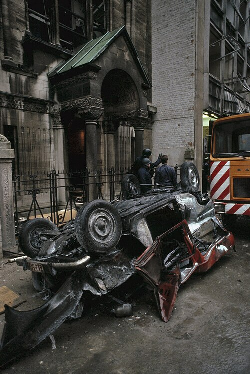

De Portugese Synagoge van Antwerpen, gelegen aan de Hoveniersstraat, staat als spiritueel hart van de Sefardische gemeenschap. Het vertegenwoordigt een rijke traditie van het Spaanse en Portugese jodendom dat een toevluchtsoord vond en bloeide in de stad.
Architectuur & Ontwerp
De synagoge, gebouwd in 1913, heeft een opvallende neoromaanse stijl met Byzantijnse stijl invloeden, waardoor het zich onderscheidt uit andere synagogen in Antwerpen. Het interieur staat bekend om zijn elegante eenvoud, met donkere houten kerkbanken en een traditionele lay-out gecentreerd rond de Tebah (Bimah).
Historische informatie
De synagoge kreeg de opdracht om de groeiende gemeenschap van Sefardische Joden te dienen, waarvan een groot deel die betrokken waren bij de diamanthandel. Wonder boven wonder overleefde het gebouw de Tweede Wereldoorlog met relatief kleine schade vergeleken met anderen, waardoor het mogelijk is om de gemeenschap bijna een eeuw lang vrijwel onafgebroken te blijven dienen.
Gemeenschapsleven
De synagoge volgt de westerse Sefardische ritus (Minhag Amsterdam/Londen). Het blijft een actief gebedscentrum en gemeenschapsbijeenkomsten, waarbij unieke liturgische tradities en melodieën die dateren, in stand worden gehouden eeuwen terug.
1981 Synagogebomaanslag

Nasleep van het bombardement op de Hoveniersstraat
Op de ochtend van 20 oktober 1981 trof een tragedie het hart van de Antwerpse Diamantwijk. Kort na 9.00 uur, slechts enkele minuten voordat de Simchat Torah-diensten zouden beginnen, a enorme vrachtwagenbom ontplofte buiten de Portugese synagoge. De ontploffing eiste het leven van drie mensen en liet 106 anderen gewond achter.
De bom was verborgen in een bestelwagen die 's nachts met een wiel geparkeerd stond verwijderd, waardoor een storing ontstaat. De kracht van de explosie was verwoestend en sloeg door de zware deuren van de synagoge ingewikkelde glas-in-loodramen, en verbrijzelende winkelpuien in de buurt. Alleen de assen en het puin van het voertuig bleven achter.
Uit onderzoek is gebleken dat de vrachtwagen is gekocht door een man onder de alias 'Nicola Brazzi'. vermoedelijk van Libanese afkomst. Terwijl de Palestijnse terreurgroep Black September de verantwoordelijkheid opeiste, werd de... onderzoek kende verschillende wendingen, waaronder de arrestatie van neonazistische verdachten en later, in 2008, de arrestatie van een verdachte in Canada was betrokken bij zowel deze aanval als de bomaanslag op de synagoge in Parijs in 1980.
Premier Mark Eyskens veroordeelde de daad als 'duivels slecht'. Het gebeurde slechts één jaar na een soortgelijke aanval in Parijs en volgde een handgranaataanval op Joodse schoolkinderen in Antwerpen, enkele maanden daarvoor, markeert een donkere periode voor de gemeenschap dat versterkte uiteindelijk hun vastberadenheid en eenheid.